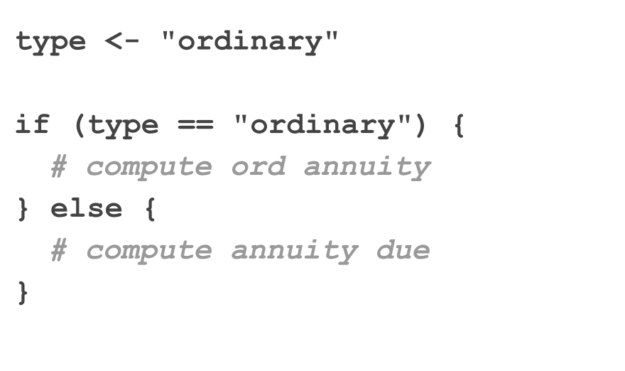

19 Conditionals: If-Else
In the last two chapters you got your feet wet around programming structures. Specifically, you got your first contact with functions, and you also got introduced to the notion of R compound expressions. In this chapter you will learn about another common programming structure known as conditionals.
Every programming language comes with a set of structures that allows us to have control over how commands are executed. One of these structures is called conditionals, and as its name indicates, they are used to evaluate conditions. Simply put, conditional statements, commonly referred to as if-else statements, allow you to decide what to do based on a logical condition.
19.1 Motivation
So far we have extensively used a simple savings-investing scenario in which $1000 are deposited in a savings that pays an annual interest rate of 2%, and the future value formula is used to calculate the amount of money at the end of a certain number of years.
Let’s now consider a less simplistic savings scenario.
Say you deposit $1000 into a savings account that gives you 2% annual return. The difference this time is that you will also make contributions of $1000 to this savings account every year. The question is still the same, for example:
How much money will you have in 3 years?
19.1.1 Future Value of Ordinary Annuity
To make things more specific, consider the following scenario. Imagine you recently applied for a job, they hired you, and today is your first day of work. So let’s take this point in time as time 0, or equivalently the beginning of year 1 in your new job.
During this first year you manage to save $1000, and at the end of year 1 you deposit this sum of money into a savings account that pays 2% interest annually. During your second year of work, you manage again to save $1000, which you add to your savings account at the very end of year 2. The same thing happens during your third year of work: you save $1000 and contribute this amount to your savings account at the end of year 3. This is illustrated in the diagram below, with a generic rate of return:

Figure 19.1: Timeline of an ordinary annuity: contributions made at the end of each year.
The balance in your savings account at the end of year 3 is given by:
\[ \underbrace{1000 (1 + 0.02)^2}_{\text{1st contribution}} + \underbrace{1000 (1 + 0.02)}_{\text{2nd contrib.}} + \underbrace{1000}_{\text{3rd contrib.}} = 3060.4 \]
which in R we can quickly calculate as:
1000 * (1.02)^2 + 1000 * (1.02) + 1000
> [1] 3060.4This example corresponds to what is formally called an ordinary annuity. It is an annuity because the same amount of money is contributed every year. It is ordinary because the contributions are made at the end of each period (e.g. end of each year).
The formula to calculate the future value of an ordinary annuity is given by:
\[ \text{FV} = \text{C} \times \left [ \frac{(1 + r)^t - 1}{r} \right] \]
\(\text{FV}\) = future value (how much you’ll have)
\(\text{C}\) = constant periodic contribution
\(r\) = rate of return (e.g. annual rate of return)
\(t\) = number of periods (e.g. number of years)
Writing code in a less quick and dirty, we may type these commands:
# at the end of year 3
contrib = 1000
year = 3
rate = 0.02
# FV of ordinary annuity
contrib * ((1 + rate)^year - 1) / rate
> [1] 3060.419.1.2 Future Value of Annuity Due
It turns out that there is another type of annuity known as annuity due. The difference between the ordinary annuity and the annuity due is that in the latter the contributions are made at the beginning of every year. Here’s an example.
Picture the same hypothetical situation. Today is your first day of work which corresponds to time 0, that is, the beginning of year 1 in your new job. In this scenario, though, let’s say you already have $1000 at your disposal at this point in time. You go to the bank and deposit this sum of money into a savings account that pays an annual interest rate of 2%.
During this first year you manage to save $1000, and at the beginning of year 2 you make this contribution to your savings account. During your second year of work, you manage again to save $1000, which you add to your savings account at the beginning of year 3. This is illustrated in the diagram below, with a generic rate of return:

Figure 19.2: Timeline of an annuity due: contributions made at the beginning of each year.
The balance in your savings account at the end of year 3 is given by:
\[ \underbrace{1000 (1 + 0.02)^3}_{\text{1st contribution}} + \underbrace{1000 (1 + 0.02)^2}_{\text{2nd contrib.}} + \underbrace{1000 (1 + 0.02)}_{\text{3rd contrib.}} = 3121.608 \]
which in R we can quickly calculate as:
1000 * (1.02)^3 + 1000 * (1 + 0.02)^2 + 1000 * (1 + 0.02)
> [1] 3121.608The formula to calculate the future value of an annuity due is given by:
\[ \text{FV} = \text{C} \times \left [ \frac{(1 + r)^t - 1}{r} \right] \times (1 + r) \]
\(\text{FV}\) = future value (how much you’ll have)
\(\text{C}\) = constant periodic contribution
\(r\) = rate of return (e.g. annual rate of return)
\(t\) = number of periods (e.g. number of years)
In a less informal way, we can write the following lines of code:
# at the end of year 3
contrib = 1000
year = 3
rate = 0.02
# FV of annuity due
contrib * (1 + rate) * ((1 + rate)^year - 1) / rate
> [1] 3121.608As you know, we can also consider a vectorized option:
# over a 3 year period
contrib = 1000
years = 1:3
rate = 0.02
# FV of annuity due
contrib * (1 + rate) * ((1 + rate)^years - 1) / rate
> [1] 1020.000 2060.400 3121.60819.2 Conditionals
There are two types of annuity:
ordinary (contributions at the end of each period)
due (contributions at the beginning of each period)
What if you want to consider an input type that can take
two values: type = "ordinary" or type = "due"?
# in 3 years
contrib = 1000
years = 1:3
rate = 0.02Ordinary annuity:
# if type == "ordinary"
contrib * ((1 + rate)^years - 1) / rate
> [1] 1000.0 2020.0 3060.4Annuity due:
# if type == "due"
contrib * (1 + rate) * ((1 + rate)^years - 1) / rate
> [1] 1020.000 2060.400 3121.60819.2.1 If-else conditions
Perhaps the best way for you to get introduced to if-else statements is to
see one for yourself, so here it is:
# ordinary annuity
contrib = 1000
years = 1:3
rate = 0.02
type = "ordinary"
# if-else statement
if (type == "ordinary") {
fv = contrib * ((1 + rate)^years - 1) / rate
} else {
fv = contrib * (1 + rate) * ((1 + rate)^years - 1) / rate
}
fv
> [1] 1000.0 2020.0 3060.4I hope that just by looking at the conditional statement you get the gist of
what is going on. If the type of annuity is the ordinary one
(type == "ordinary") then we apply the formula of the FV of ordinary annuity.
Otherwise (else) we apply the formula of the FV of annuity due.
The same piece of code can be implemented with the other type of annuity
# annuity due
contrib = 1000
years = 1:3
rate = 0.02
type = "due"
if (type == "ordinary") {
fv = contrib * ((1 + rate)^years - 1) / rate
} else {
fv = contrib * (1 + rate) * ((1 + rate)^years - 1) / rate
}
fv
> [1] 1020.000 2060.400 3121.60819.2.2 Anatomy of if-else statements
The if-then-else statement makes it possible to choose between two (possibly compound) expressions depending on the value of a (logical) condition.
In R (as in many other languages) the if-then-else statement has the following structure:
if (condition) {
# do something
} else {
# do something else
}In our working example with the two types of annuities, the condition that
we are evaluating depends on the value of type:
if (type == "ordinary") {
# compute ordinary annuity
} else {
# compute annuity due
}If type == "ordinary",
then we should compute the future value of annuity using its ordinary version.
Otherwise, we should compute the future value using the annuity due formula.
Let’s dissect the conditional statement

An if-else statement always begins with the if clause. You basically refer
to it as a function, that is, employing parenthesis if( ). The thing that
goes inside parenthesis corresponds to the logical condition to be evaluated.
Then we have the R expression, defined with the first pair of braces { } that
contains the code to be executed when the logical condition is true. Next,
right after the closing brace of the expression associated to the if-clause, we
have the else clause. This second clause involves another R expression, the
one defined with a second pair of braces. This expression contains the code to
be executed when the logical condition is false.
For readability purposes, and to match the syntax used in many other programming
languages, when declaring the if clause I prefer to leave a blank space before
the opening parenthesis: if (condition).
Using the annuity example, let’s recap the main parts of a typical if-else
statement. In general, this kind of statement consists of the if clause
and the else clause. Only the if clause uses parenthesis.

Inside the if() function, you specify a condition to be
evaluated. This condition can be almost any piece of code that R will evaluate
into a logical value. The important thing about this condition is that it
must correspond to a single logical value, either a single TRUE or a single
FALSE.
The condition is an expression that when evaluated returns
a logical value of length one. In other words, whatever you pass as the
input of the if clause, it has to be something that becomes TRUE or FALSE

In general, an R expression—using braces { }—is used for each clause:
the first one with the code that tells R what to do when the evaluated
condition is true; the second one for what to do when the condition is false.

19.2.3 Minimalist If-then-else
if-else statements can be written in different forms, depending on the types
of expressions that are evaluated. If the expressions of both the if clause
and the else clause are simple expressions, the syntax of the if-else
code can be simplified into one line of code:
if (condition) expression_1 else expression_2Consider the following example that uses a conditional statement to decide between calculating the square root of the input if the input value is positive, or computing the negative square root of the negative input if the input value is negative:
x <- 10
if (x > 0) {
y <- sqrt(x)
} else {
y <- -sqrt(-x)
}
y
> [1] 3.162278Because the code in both clauses consists of simple expressions, the use of braces is not mandatory. In fact, you can write the conditional statement in a single line of code, as follows:
x <- 10
# with simple expressions, braces are optional
if (x > 0) y <- sqrt(x) else y <- -sqrt(-x)
yInterestingly, the previous statement can be written more succinctly in R as:
x <- 10
# you can assign the output of an if-else statement
# to an object
y <- if (x > 0) sqrt(x) else -sqrt(-x)
yAgain, even though the previous commands are perfectly okay, I prefer to use braces when working with conditional structures. This is a good practice that improves readability:
# embrace braces: use them as much as possible!
x <- 10
if (x > 0) {
y <- sqrt(x)
} else {
y <- -sqrt(-x)
}19.2.4 Simple If’s
There is a simplified form of if-else statement which is available when
there is no expression in the else clause. In its simplest version this
statement has the general form:
if (condition) expressionand it is equivalent to:
if (condition) expression else NULLHere’s an example in which we have two numbers, x and y, and we are
interested in knowing if x is greater than y. If yes, we print the message
"x is greater than y". If not, then we don’t really care, and we do nothing.
x <- 4
y <- 2
if (x > y) {
print("x is greater than y")
}
> [1] "x is greater than y"19.3 Multiple If’s
A common situation involves working with multiple conditions at the same time. You can chain multiple if-else statements like so:
y <- 1 # Change this value!
if (y > 0) {
print("positive")
} else if (y < 0) {
print("negative")
} else {
print("zero?")
}
> [1] "positive"Working with multiple chained if’s becomes cumbersome. Consider the following example that uses several if’s to convert a day of the week into a number:
# Convert the day of the week into a number.
day <- "Tuesday" # Change this value!
if (day == 'Sunday') {
num_day <- 1
} else {
if (day == "Monday") {
num_day <- 2
} else {
if (day == "Tuesday") {
num_day <- 3
} else {
if (day == "Wednesday") {
num_day <- 4
} else {
if (day == "Thursday") {
num_day <- 5
} else {
if (day == "Friday") {
num_day <- 6
} else {
if (day == "Saturday") {
num_day <- 7
}
}
}
}
}
}
}
num_day
> [1] 3Working with several nested if’s like in the example above can be a nightmare.
In R, you can get rid of many of the braces like this:
# Convert the day of the week into a number.
day <- "Tuesday" # Change this value!
if (day == 'Sunday') {
num_day <- 1
} else if (day == "Monday") {
num_day <- 2
} else if (day == "Tuesday") {
num_day <- 3
} else if (day == "Wednesday") {
num_day <- 4
} else if (day == "Thursday") {
num_day <- 5
} else if (day == "Friday") {
num_day <- 6
} else if (day == "Saturday") {
num_day <- 7
}
num_day
> [1] 319.3.1 Switch statements
But still we have too many if’s, and there’s a lot of repetition in the code. If you find yourself using many if-else statements with identical structure for slightly different cases, you may want to consider a switch statement instead:
# Convert the day of the week into a number.
day <- "Tuesday" # Change this value!
switch(day, # The expression to be evaluated.
Sunday = 1,
Monday = 2,
Tuesday = 3,
Wednesday = 4,
Thursday = 5,
Friday = 6,
Saturday = 7,
NA) # an (optional) default value if there are no matches
> [1] 3Switch statements can also accept integer arguments, which will act as indices to choose a corresponding element:
# Convert a number into a day of the week.
day_num <- 3 # Change this value!
switch(day_num,
"Sunday",
"Monday",
"Tuesday",
"Wednesday",
"Thursday",
"Friday",
"Saturday")
> [1] "Tuesday"19.4 Derivation of FVOA
In case you are curious, here’s the derivation of the formula for the Future Value of an Ordinary Annuity.
For the sake of illustration, we’ll consider a time period of three years, but the formula can be easily generalized to any number of years.

Figure 19.3: Timeline of an ordinary annuity
The starting point is the following equation:
\[ \text{FV} = \text{C} + \text{C} (1 + r) + \text{C} (1 + r)^2 \]
Multiplying both sides by \((1+r)\) we get:
\[\begin{align*} (1+r) \text{FV} &= (1+r) \left[ \text{C} + \text{C} (1 + r) + \text{C} (1 + r)^2 \right] \\ (1+r) \text{FV} &= (1+r) \text{C} + \text{C} (1 + r)^2 + \text{C} (1 + r)^3 \end{align*}\]
Notice that:
\[ (1+r) \text{FV} = \underbrace{\text{C} (1 + r) + \text{C} (1 + r)^2}_{\text{FV} - \text{C}} + \text{C} (1 + r)^3 \]
Doing more algebra we get the following:
\[\begin{align*} (1+r) \text{FV} &= \underbrace{\text{C} (1 + r) + \text{C} (1 + r)^2}_{\text{FV} - \text{C}} + \text{C} (1 + r)^3 \\ (1+r) \text{FV} &= \text{FV} - \text{C} + \text{C} (1 + r)^3 \\ \text{FV} - (1+r) \text{FV} &= \text{C} - \text{C}(1+r)^3 \\ \text{FV} \left[ 1 - (1+r) \right] &= \text{C} \left[ 1 - (1+r)^3 \right] \\ \text{FV} &= \text{C} \frac{ \left[ 1 - (1+r)^3 \right]}{ \left[ 1 - (1+r) \right]} \\ \text{FV} &= \text{C} \frac{ \left[ (1+r)^3 -1 \right]}{ \left[ (1+r) -1 \right]} \\ \text{FV} &= \text{C} \left[ \frac{(1+r)^3 -1}{r} \right] \end{align*}\]
Therefore:
\[ \text{FV} = \text{C} + \text{C} (1 + r) + \text{C} (1 + r)^2 = \text{C} \left[ \frac{(1+r)^3 -1}{r} \right] \]